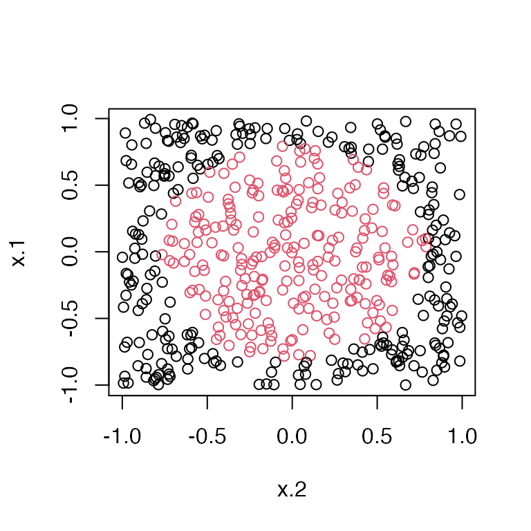
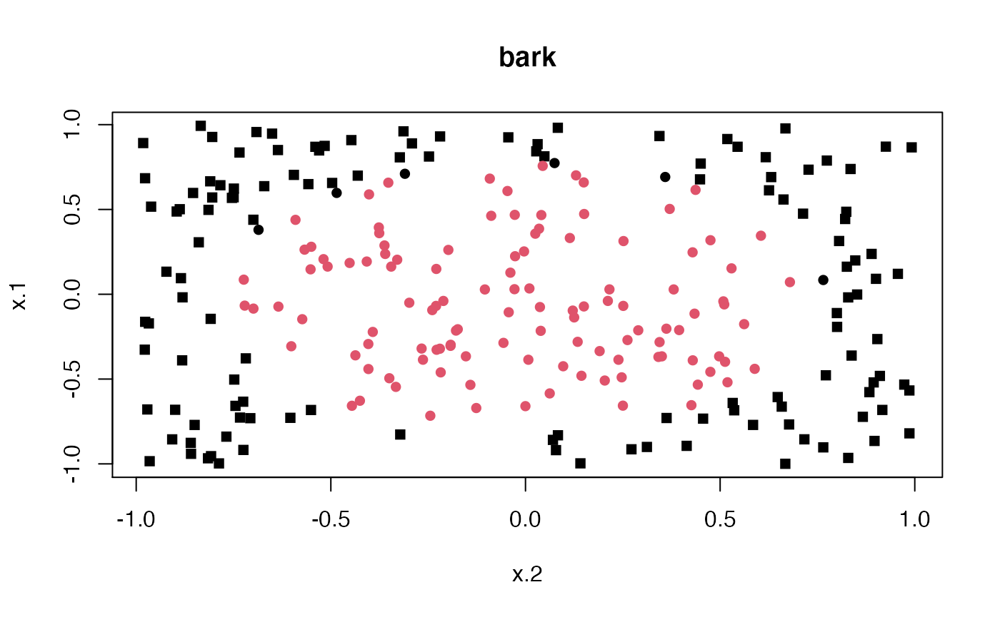
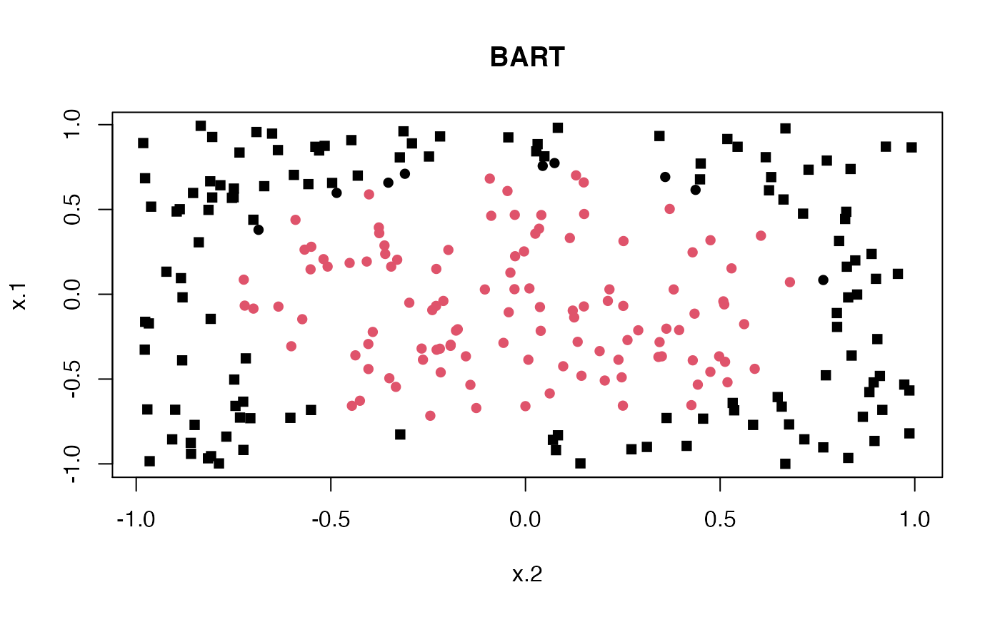
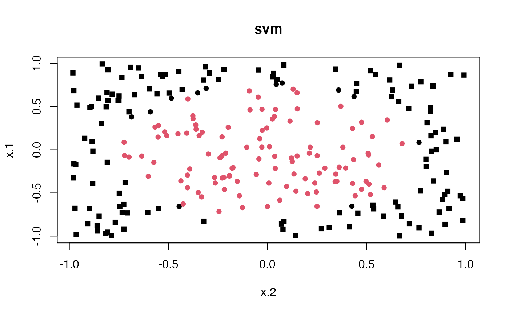

vignettes/svm-bark-bart-comparison.Rmd
svm-bark-bart-comparison.RmdTo get the latest version , install from github (needs C++ compilation))
devtools::install_github("merliseclyde/bark")
set.seed(42) n = 500 circle2 = as.data.frame(bark::sim_circle(n, dim = 2))
plot(x.1 ~ x.2, data=circle2, col=y+1)

set.seed(42) train = sample(1:n, size = floor(n/2), rep=FALSE) circle2.bark = bark(as.matrix(circle2[train, 1:2]), circle2[train, 3], x.test = as.matrix(circle2[-train, 1:2]), classification = TRUE, type="se") #> [1] "Starting BARK-se for this classification problem" #> [1] "burning iteration 1000, J=14, max(nj)=3" #> [1] "burning iteration 2000, J=17, max(nj)=2" #> [1] "burning iteration 3000, J=13, max(nj)=2" #> [1] "burning iteration 4000, J=7, max(nj)=2" #> [1] "burning iteration 5000, J=9, max(nj)=2" #> [1] "burning iteration 6000, J=5, max(nj)=1" #> [1] "burning iteration 7000, J=5, max(nj)=2" #> [1] "burning iteration 8000, J=4, max(nj)=1" #> [1] "burning iteration 9000, J=6, max(nj)=1" #> [1] "burning iteration 10000, J=7, max(nj)=1" #> [1] "posterior mcmc iteration 1000, J=6, max(nj)=1" #> [1] "posterior mcmc iteration 2000, J=9, max(nj)=2" #> [1] "posterior mcmc iteration 3000, J=13, max(nj)=2" #> [1] "posterior mcmc iteration 4000, J=6, max(nj)=1" #> [1] "posterior mcmc iteration 5000, J=9, max(nj)=1" #> [1] "posterior mcmc iteration 6000, J=11, max(nj)=1" #> [1] "posterior mcmc iteration 7000, J=8, max(nj)=2" #> [1] "posterior mcmc iteration 8000, J=5, max(nj)=2" #> [1] "posterior mcmc iteration 9000, J=8, max(nj)=1" #> [1] "posterior mcmc iteration 10000, J=10, max(nj)=1"
#Classify # mean((circle2.bark$yhat.test.mean > 0) != circle2[-train, "y"]) #> [1] 0.024
if (svm.available) { circle2.svm = svm(y ~ x.1 + x.2, data=circle2[train,], type="C") pred.svm = predict(circle2.svm, circle2[-train,]) mean(pred.svm != circle2[-train, "y"]) } #> [1] 0.048
if (bart.available) { circle.bart = pbart(x.train = circle2[train, 1:2], y.train = circle2[train, "y"]) pred.bart = predict(circle.bart, circle2[-train, 1:2]) mean((pred.bart$prob.test.mean > .5) != circle2[-train, "y"]) } #> *****Into main of pbart #> *****Data: #> data:n,p,np: 250, 2, 0 #> y1,yn: 0, 0 #> x1,x[n*p]: 0.941933, -0.245046 #> *****Number of Trees: 50 #> *****Number of Cut Points: 100 ... 100 #> *****burn and ndpost: 100, 1000 #> *****Prior:mybeta,alpha,tau: 2.000000,0.950000,0.212132 #> *****binaryOffset: -0.161119 #> *****Dirichlet:sparse,theta,omega,a,b,rho,augment: 0,0,1,0.5,1,2,0 #> *****nkeeptrain,nkeeptest,nkeeptreedraws: 1000,1000,1000 #> *****printevery: 100 #> *****skiptr,skipte,skiptreedraws: 1,1,1 #> #> MCMC #> done 0 (out of 1100) #> done 100 (out of 1100) #> done 200 (out of 1100) #> done 300 (out of 1100) #> done 400 (out of 1100) #> done 500 (out of 1100) #> done 600 (out of 1100) #> done 700 (out of 1100) #> done 800 (out of 1100) #> done 900 (out of 1100) #> done 1000 (out of 1100) #> time: 1s #> check counts #> trcnt,tecnt: 1000,0 #> *****In main of C++ for bart prediction #> tc (threadcount): 1 #> number of bart draws: 1000 #> number of trees in bart sum: 50 #> number of x columns: 2 #> from x,np,p: 2, 250 #> ***using serial code #> [1] 0.036
Compare classification across methods.
plot(x.1 ~ x.2, data=circle2[-train,], pch = y+15, col=(1 + (circle2.bark$yhat.test.mean > 0)), main="bark")

if (bart.available) { plot(x.1 ~ x.2, data=circle2[-train,], pch = y+15, col= ( 1 + (pred.bart$prob.test.mean > .5)), main="BART") }

if (svm.available) { plot(x.1 ~ x.2, data=circle2[-train,], pch = y+15, col= as.numeric(pred.svm), main="svm") }
